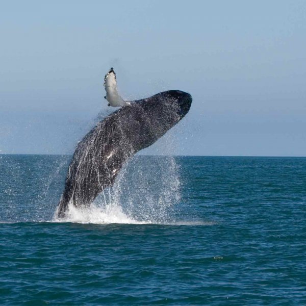

The Whale
20th jan 2018
Whales are a widely distributed and diverse group of fully aquatic placental marine mammals. They are an informal grouping within the infraorder Cetacea, usually excluding dolphins and porpoises. Whales, dolphins and porpoises belong to the order Cetartiodactyla with even-toed ungulates and their closest living relatives are the hippopotamuses, having diverged about 40 million years ago.

Whales are creatures of the open ocean; they feed, mate, give birth, suckle and raise their young at sea. So extreme is their adaptation to life underwater that they are unable to survive on land. Whales range in size from the 2.6 metres (8.5 ft) and 135 kilograms (298 lb) dwarf sperm whale to the 29.9 metres (98 ft) and 190 metric tons (210 short tons) blue whale, which is the largest creature that has ever lived.